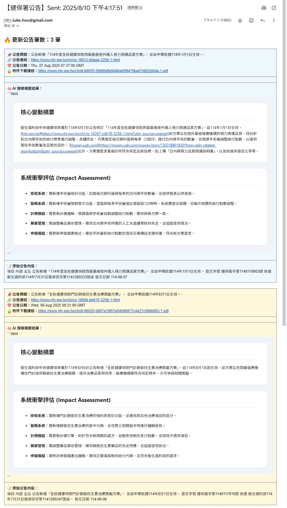

健保公告自動監控與 AI 摘要通知系統
一個為醫療資訊產業打造的 n8n 自動化工作流，確保關鍵政策變動即時掌握。
項目概述
在醫療資訊產業，健保署的政策公告是影響系統開發與維運的關鍵資訊。然而，傳統依賴人工查閱或公文傳遞的方式，容易造成資訊延遲，甚至遺漏，導致開發團隊需要臨時加班應對，潛藏著極高的專案風險。
為了解決此問題，我開發了這套 n8n 自動化工作流。它能定時爬取健保署網站，擷取最新公告，並利用 AI 進行內容分析與摘要，最後透過 Email 自動發送通知給相關人員，實現了從「被動接收」到「主動監控」的轉變。
核心做法與亮點
-
定時網頁爬蟲 (Scheduled Web Scraping)設定每日定時觸發，自動爬取健保署「近期公告」頁面，確保資訊獲取的即時性。
-
AI 智慧摘要與擴大檢索將爬取到的公告內容送入 OpenAI API，不僅能生成簡潔易懂的重點摘要，更能透過語意搜尋，找出可能相關的歷史公告，提供更完整的決策參考。
-
可靠的通知機制無論當天是否有新公告，系統都會發送通知信。若有新公告，信件會包含 AI 生成的摘要；若無，則會發送「今日無新公告」的提醒，讓接收者明確知道系統正常運行，而非流程故障。
成果展示
以下為此工作流的實際運行截圖：
n8n 工作流全覽

有新公告時的 Email 通知
無新公告時的 Email 通知
價值與影響
-
降低資訊延誤風險 將過去被動等待公文的模式，轉變為主動、即時的資訊監控，大幅降低因資訊差導致的延期風險。
-
提升團隊應變能力 讓開發與維運團隊能第一時間掌握政策變動，提早規劃應對措施，減少臨時加班的壓力。
-
釋放人力專注核心業務 將重複性的查閱工作交給自動化流程，讓人力資源能更專注於系統分析、開發等高價值任務。